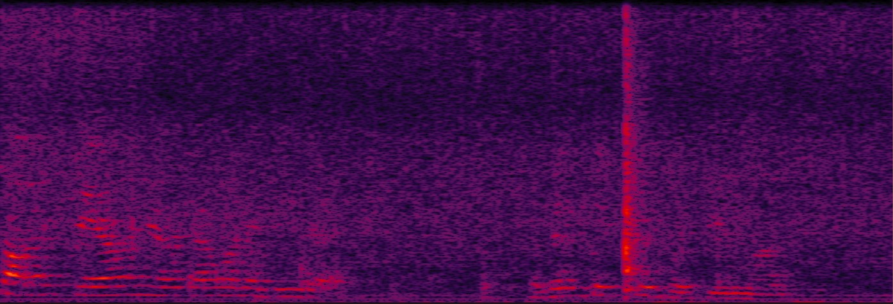
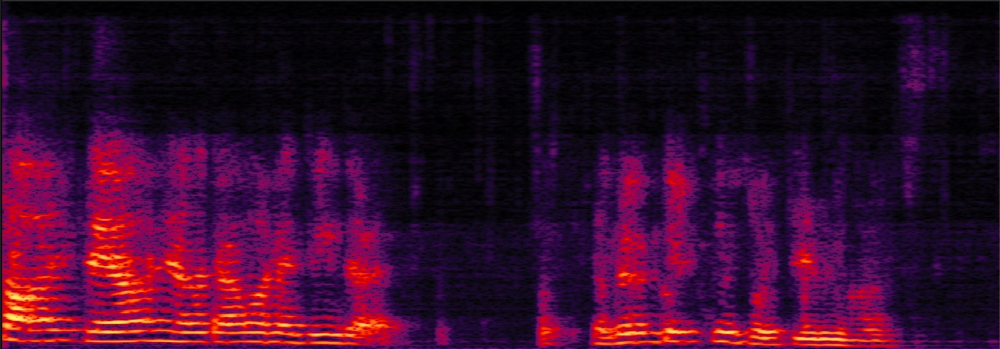
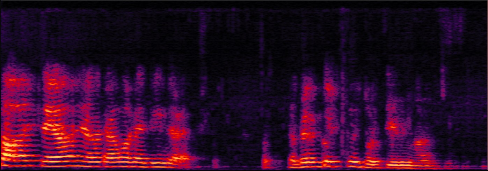
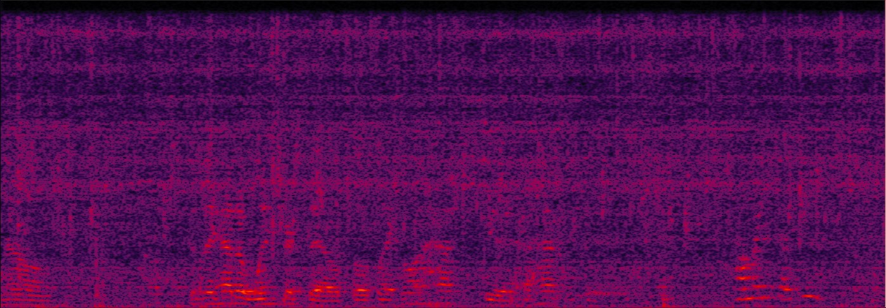
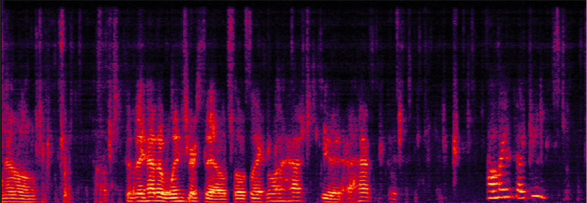
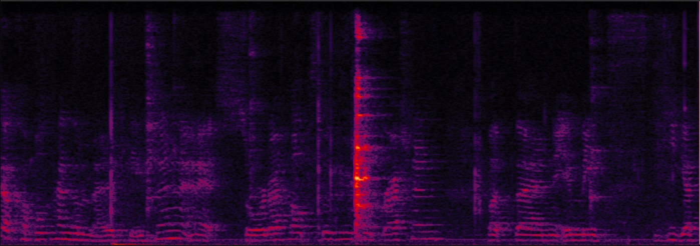
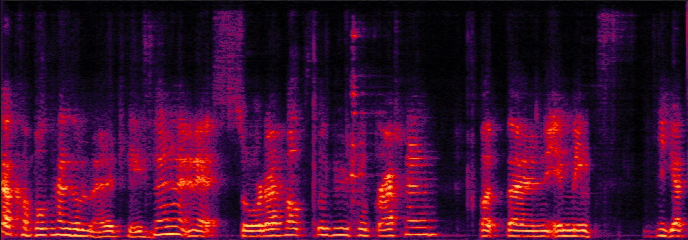
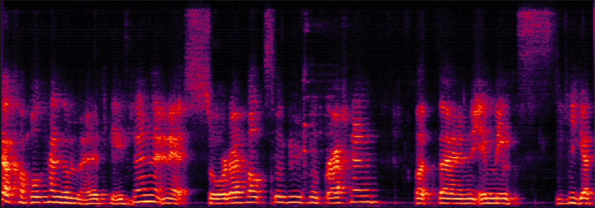

submitted to ICASSP2025, Yu Liao, Haixin Guan, Shuang Wei, Yanhua Long, Shanghai Normal University, Shanghai, China, Unisound AI Technology Co., Ltd., Beijing, China
When there’s a mismatch between the training and test domains, supervised speech enhancement (SE) models trained on synthetic paired noisy-clean data often struggle in real-world scenarios,
highlighting the industry’s strong demand for unsupervised training and domain adaptation methods.
We introduce PHA-ReMixIT, a novel approach for leveraging out-of-domain (OOD) noise signals to enhance unsupervised domain adaptation in SE.
This is a demo page of PHA-RemixIT. We present several audio demos selected from the CHiME-5/eval/1 subset, along with a comparison of samples enhanced using RemixIT and PHA-ReMixIT to demonstrate the results.
| No. | Input | ReMixIT | PHA-ReMixIT |
|---|---|---|---|
| S21_P46_106 |

|

|

|
| S21_P46_96 |

|

|
|
| S21_P47_231 |

|

|

|